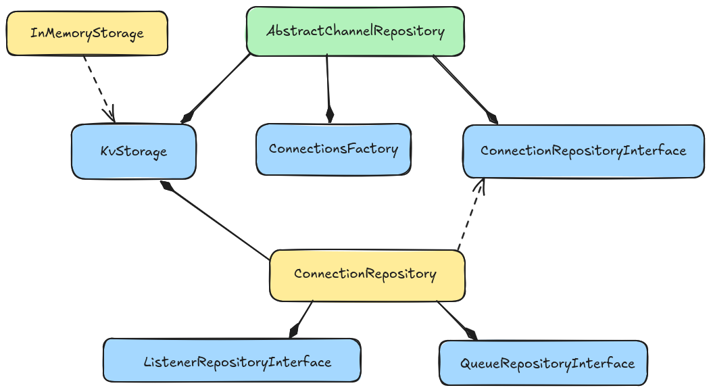

Persistence#


Base classes for channels and connections repositories. The main idea is that a repository relies on some KV storage engine abstraction, and uses it for storing its own configuration, and its correspondant composites repositories to build final objects to return.
To build a persistence layer is needed to provide an implementation to some of above abstractions, and use them to build a custom ChannelRepository
Suggestions
If your implementation uses objects that are directly persistable by storage engine you are using, cleanest manner of implementing your custom layer is to simply
give an implementation to a KvStorage and just use it in all composite repositories.
Otherwise you should implement a dump strategy inside repositories themselves, e.g. when queues hold a client connection that can’t be serialised by pickle.
Builder#
ChannelRepositoryBuilder is the easiest way to get a working persistence layer. By default it
stores everything in one storage instance, each kind of object under its own namespace:
from eric_sse.builder import ChannelRepositoryBuilder
from eric_sse.prefabs import SSEChannel
repository = ChannelRepositoryBuilder(SSEChannel, my_storage).listeners(MyListener).build()
channel = repository.create({'retry_timeout_milliseconds': 100})
connection = channel.add_connection()
repository.persist(channel)
Persistence is always explicit: channels and their connections are stored when you call persist. Messages are
persisted by queues themselves, so dispatch and broadcast do not need a persist.
See Persistence for the classes.